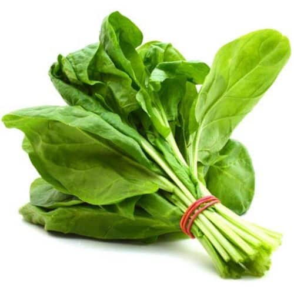
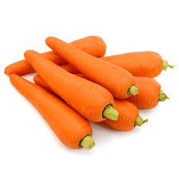
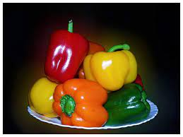
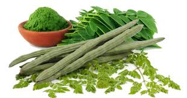

Spinach

If Popeye the Sailor Man could get his strength from spinach, you could too because this leafy vegetable is considered a superfood. The reason why spinach is considered a superfood is because of the loads of nutrients and low-calorie that it possesses. This leafy veggie also benefits your skin, hair and bones.
Carrots

Carrots tend to be synonymous with eye health, but there are several other equally amazing health benefits of this humble root vegetable.
Capsicum

Bell peppers (Capsicum annuum) are fruits that belong to the nightshade family. They are low in calories and rich in vitamin C and other antioxidants, making them an excellent addition to a healthy diet.
Broccoli

A study by Nutrition Research found that consuming steamed broccoli regularly lowers the risk of cardiovascular disease by reducing the total amount of cholesterol in the body. Another study in the US also found that increasing vegetables in the diet, especially brassica vegetables like broccoli, may reduce the risk of heart disease.
Bowl of raw broccoli florets Top 5 health benefits of broccoli
Eggplant

The eggplant has been an ingredient in traditional medicine for thousands of years. In the ancient Indian system of ayurvedic medicine, practitioners used white eggplant to treat diabetes and the roots to relieve asthma.
Moringa

Moringa has many important vitamins and minerals. The leaves have 7 times more vitamin C than oranges and 15 times more potassium than bananas. It also has calcium, protein, iron, and amino acids, which help your body heal and build muscle.
Sweet Potato

Sweet potatoes might be one of nature’s greatest gifts. Not only are they packed with essential nutrients, but they’re also incredibly versatile, delicious, and easy to cook.
Raw Banana

Raw bananas are rich in potassium, which works as a vasodilator and controls blood pressure levels. It also prevents many heart conditions, such as atherosclerosis and heart attack, and improves heart health. Green bananas have a low glycemic index and slowly release the insulin hormone after consumption.
Cabbage

Cabbage may not be the most attractive vegetable, but it’s full of nutritional goodness that can keep you feeling strong and healthy. From boosting your immune system to improving your digestion (sometimes with embarrassing results), cabbage and its health benefits deserve a place at your table.